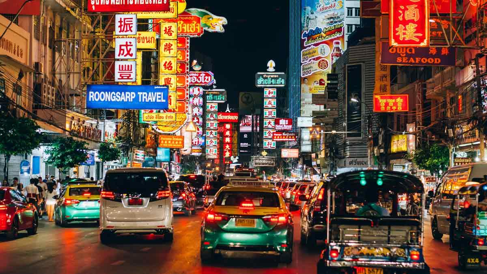

01 / DISCOVER
Where tradition meets tomorrow.
MORE THAN A DESTINATION
Bangkok is a city full of energy and surprises. One moment, you are surrounded by busy streets, colorful markets, and modern shopping malls. A few streets away, you might discover a peaceful temple hidden among the buildings.
What makes Bangkok special is the way tradition and modern life exist side by side. From delicious street food to beautiful temples, every corner of the city has something new to explore.
"The best way to explore Bangkok is to get a little lost."
